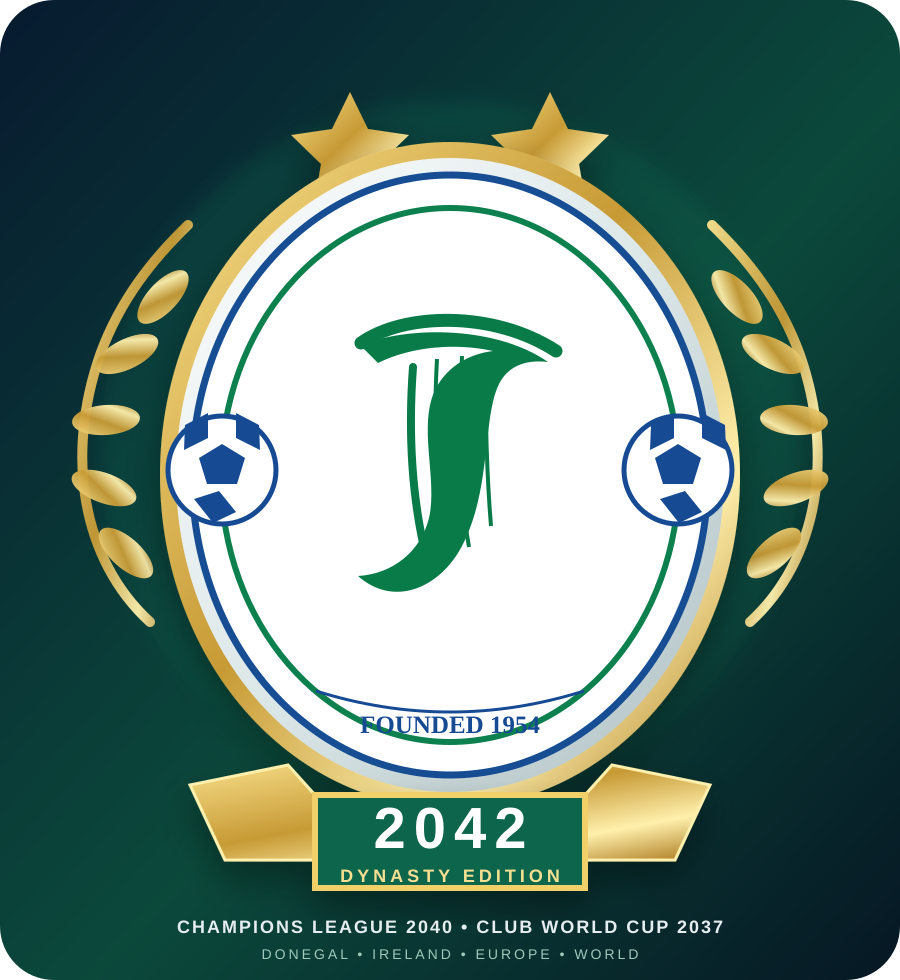

„Founded 1954“, Harfe, Blau und Grün bleiben. 2042 wird als Ära ergänzt, nicht als falsches Gründungsjahr.

Finn Harps FM Wiki · Design Preview
2042
Dynasty Edition
Das klassische Wappen bleibt im Kern erkennbar. Die Save-Geschichte bekommt außen ihren eigenen Rahmen: tiefes Donegal-Grün, Gold für die großen Titel und eine klare 2042-Signatur.
1954 bleibt Gründungsjahr
2040 Europa
2037 Welt
2042 Dynasty Edition
Die Sterne sind ausdrücklich beschriftete Erinnerungsmarker für Europa 2040 und Welt 2037. Sie sollen nicht als allgemeine Anzahl aller gewonnenen Titel gelesen werden.
Champions League 2040 und Club World Cup 2037 werden direkt in der Jubiläumsfassung getragen, statt nur irgendwo im Fließtext zu stehen.
Das SVG bleibt auch auf großen 2K-Displays sauber und kann später als Hero-Wappen, Vereinsmarke oder Saisonbadge eingesetzt werden.